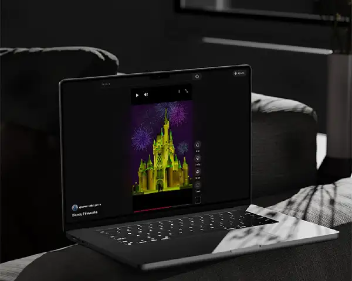
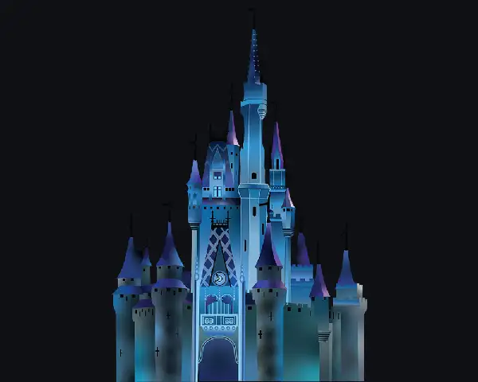
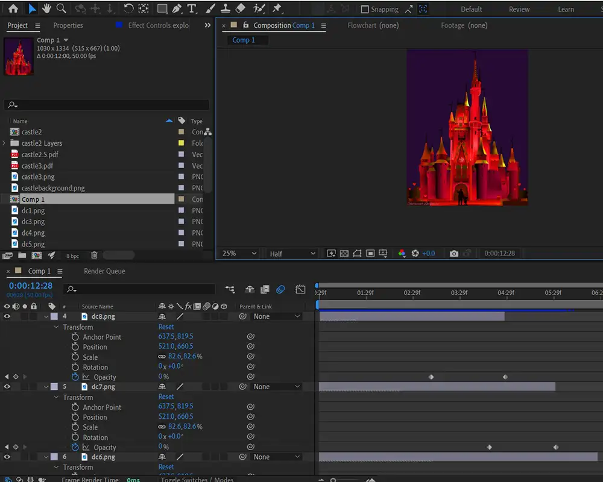

A whimsical motion graphic exploring fireworks, color transitions, and cinematic atmosphere in After Effects.

Overview
This project began as a class assignment designed to help me explore Adobe After Effects. After the class ended, I revisited the piece and refined it further to create a more polished and visually engaging final animation.
Inspired by my love of Disney, I designed and animated a castle scene focused on fireworks, lighting, color transitions, and looping motion. The goal was to create a fun and whimsical motion graphic while developing stronger skills in timing, effects, and atmosphere.
My Role
Motion Designer, Illustrator, Animator
Tools
Adobe After Effects, Illustrator, Photoshop
Focus Areas
Timing, fireworks effects, color transitions, atmosphere
Output
Looping motion graphic / MP4 animation
The Challenge
The challenge of this project was to create a magical animated environment using After Effects while learning how to control motion, visual balance, and effects. I especially wanted to figure out how to make fireworks feel exciting and believable instead of stiff or artificial.
Because the final piece needed to loop smoothly, I also had to think carefully about how colors changed, how effects faded in and out, and how the motion could repeat without feeling abrupt or cut off.
Creative Goal
I wanted the motion graphic to feel whimsical, energetic, and exciting. The Disney-inspired castle gave me a playful subject to build around, while the fireworks and color changes helped create a sense of awe and celebration.
Visually, I wanted the castle to feel like the center of attention, with surrounding fireworks adding drama and movement without overwhelming the composition.
Visual Development
I created the castle artwork myself in Illustrator using multiple layers so the composition would be easier to animate later. I also used Photoshop to build and adjust the color variations of the castle, which allowed me to alternate between hues during the animation.
Creating the assets myself gave me more control over the look of the final piece and helped me think about how illustration and motion design can work together.

Animation Techniques
In After Effects, I used keyframes, easing, opacity shifts, and particle-based effects to bring the scene to life. When one castle color ended, it gradually faded into another so the transitions felt smooth and continuous rather than sudden.
The fireworks were built through repeated experimentation. I focused on creating bursts that exploded, scattered, and then faded away so they felt more magical and layered. Some fireworks were timed faster or slower than others to keep the scene feeling active and visually balanced.
- Keyframes to control timing and movement
- Easing to make transitions feel smoother
- Opacity shifts for castle color changes
- Particle effects to simulate fireworks
- Staggered timing to create variation and balance
Motion Strategy
The animation is built around two main actions: the castle shifting through glowing colors and fireworks bursting around it. Rather than telling a full story, the piece is designed as a looping visual moment that cycles continuously without feeling like it starts or stops too abruptly.
I kept the castle as the visual anchor and used surrounding fireworks to frame the composition. If one side of the scene felt too empty, I adjusted the fireworks placement to bring the composition back into balance.

Featured Frame
This still captures the main visual goal of the piece: a glowing castle, layered color shifts, and fireworks that create a dramatic but playful atmosphere.

Challenges
The hardest part of the project was making the fireworks feel convincing. I wanted them to look exciting and magical, but getting the explosions, falling particles, and fade-outs to feel natural took a lot of trial and error.
Another major challenge was working with slow playback in After Effects. My computer lagged during previews, which made timing adjustments much slower because every small change required patience and repeated testing.
Even after rendering, I often went back to revise sections if the motion still did not feel right. That process taught me how much motion work depends on persistence and small adjustments.
Final Result
The final piece creates a looping, celebratory motion graphic that combines illustration, effects, and timing to create atmosphere without dialogue. It captures a sense of whimsy and excitement while showing my ability to animate assets I created myself.
What I Learned
This project taught me that timing is one of the most important parts of motion design. Even small shifts in pacing can change whether an animation feels balanced, exciting, or awkward.
It also taught me how much atmosphere matters. Motion is not only about movement — it is also about creating a mood that captures attention and keeps viewers engaged.
Most importantly, this project helped me realize that I genuinely enjoy motion graphics and want to keep improving in this area.
What This Project Shows
Illustration for Motion
I can create layered assets in Illustrator and prepare them for animation.
Effects & Animation
I understand keyframes, easing, opacity changes, and particle-based effects.
Timing & Pacing
I can adjust motion to create rhythm, balance, and smoother visual flow.
Creative Growth
I revisit work, refine it, and push it further beyond the original assignment.
Reflection
If I continued refining this project, I would improve the fireworks further by making their launch and explosion feel more natural. I would also slow certain moments down so the motion feels even more believable and polished.
Even so, I am proud that I was able to take a concept I cared about and successfully build it into a complete animated piece using tools I was still learning.